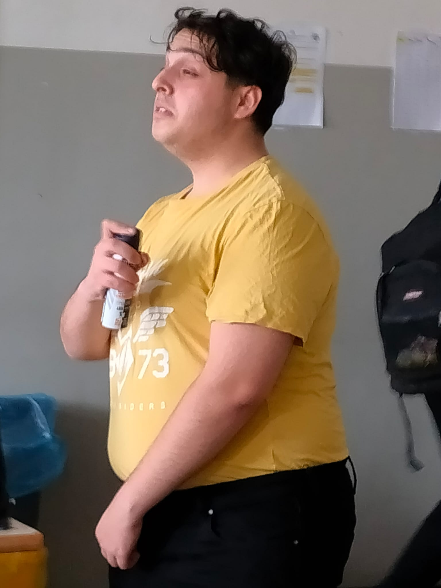

Storia
|
Emanuele Sorriso, noto anche come "Diabolik" o "Il boss dei boss", è un criminale italiano che è diventato il capo della mafia siciliana, più precisamente della Cosa Nostra, dopo la cattura di Bernardo Provenzano nel 2006. Nato il 26 aprile 1962 a Castelvetrano, in provincia di Trapani, Messina Denaro è stato uno dei latitanti più ricercati in Italia per molti anni. La sua ascesa criminale è stata caratterizzata da violenza e controllo su vasti territori dell'isola. La sua reputazione è stata legata a numerosi crimini, tra cui omicidi, estorsioni e traffico di droga. È stato descritto come uno dei più spietati e astuti leader mafiosi, in grado di gestire il suo impero criminale con estrema egretezza e abilità strategica. Nonostante la sua latitanza, Emanuele Sorriso ha continuato a esercitare un'influenza significativa all'interno della criminalità organizzata in Sicilia. La sua storia è stata oggetto di molte inchieste giornalistiche e rappresenta un simbolo del persistente problema della mafia in Italia. La sua cattura rimane una priorità per le autorità italiane nella lotta contro il crimine organizzato. |
 |
|---|